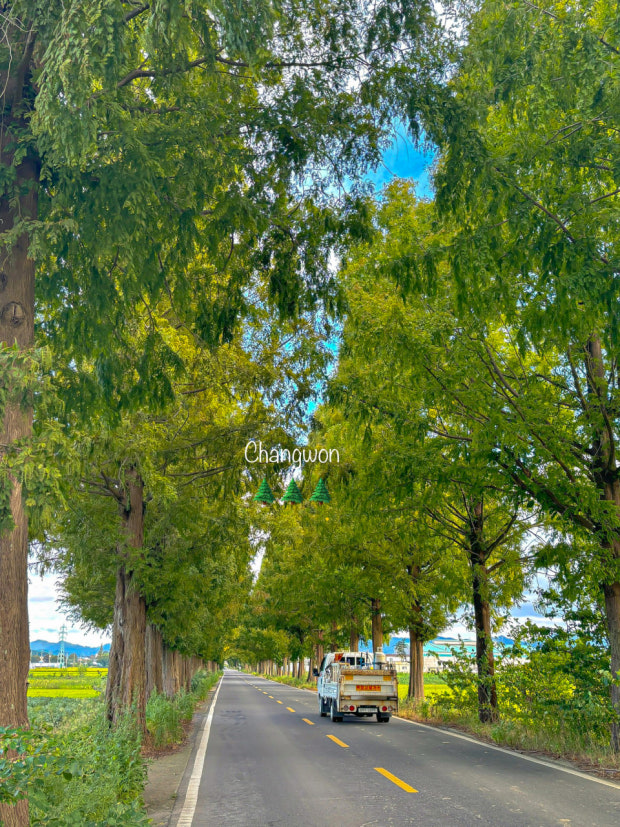
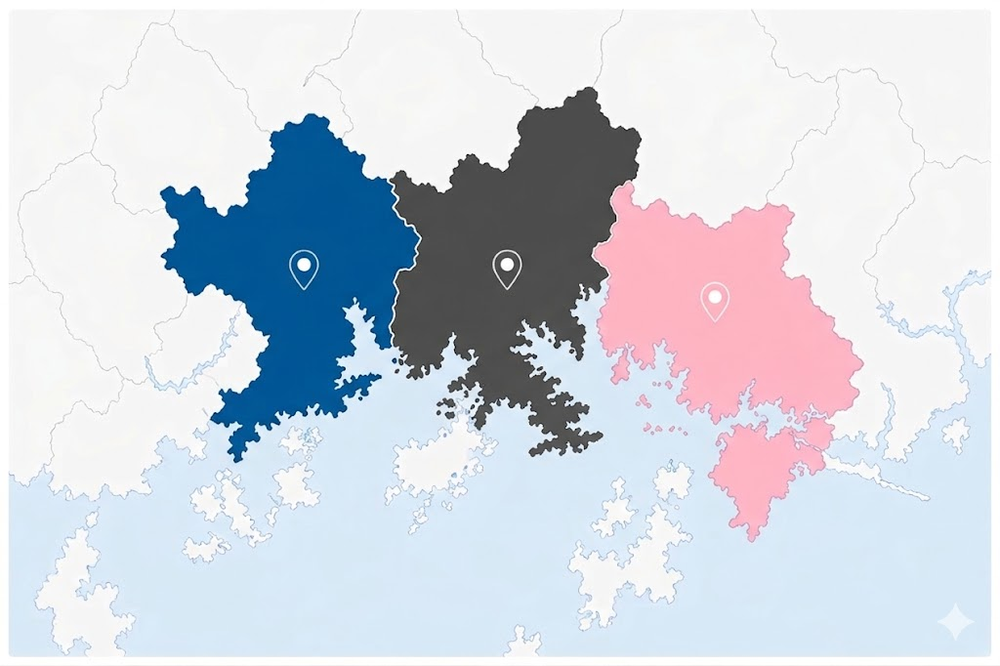

창원특례시 연대기
창원특례시의 역사를 삼한시대~현대시대 순서로 소개드립니다!
창원특례시 출신 유명인
창원특례시를 대표하는 유명인들은 소개합니다!
창원특례시 관광지
바다와 산, 그리고 산업이 어우러진 도시 창원특례시에서 매력적인 명소들을 만나보세요!

마산시
Retro Wave
바닷가의 오래된 도시와 70~80년 감성의 향취,그리고 바다를 통해 형성된 문화유산이 살아 숨 쉬는 도시

창원시
Techno Canvas
대한민국 기계 산업의 중심지로,미래 기술과 자연이 조화를 이루는 도시


진해시
Marine Blossom
벚꽃 명소로 유명한 도시로,바다와 꽃이 함께하는 아름다운 도시
창원특례시 맛집

마산 맛집
마산의 대표 로컬 맛집들을 소개합니다.

오동동 아구찜
마산을 대표하는 전통 아구찜 맛집으로 현지인들에게 꾸준히 사랑받는 곳입니다.

마산 수산시장 횟집
싱싱한 해산물과 다양한 회를 즐길 수 있는 바다 감성 맛집입니다.

가포 해물칼국수
진한 해물 육수와 푸짐한 재료가 매력적인 인기 칼국수 전문점입니다.
창원특례시 이벤트
각 지역마다 준비된 이벤트를 통해서 특별한 사은품을 받아보세요!
스탬프 모으기 이벤트!
2박 3일 동안
마산찍고, 창원찍고, 진해찍고
특산품 받아가자!
분홍빛 가득한 베스트샷 가리기!
국내 최대 벚꽃스팟
진해 벚꽃 군항제에서 의미있는 추억 만들고
사은품 받아가자!